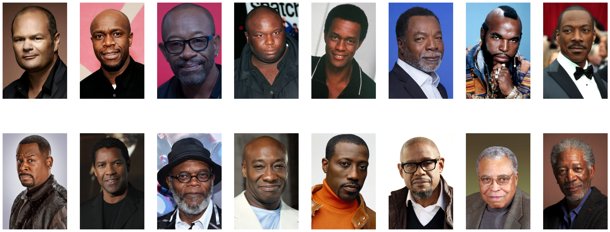
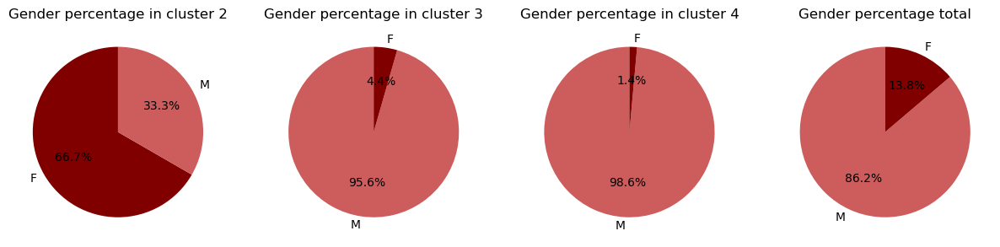
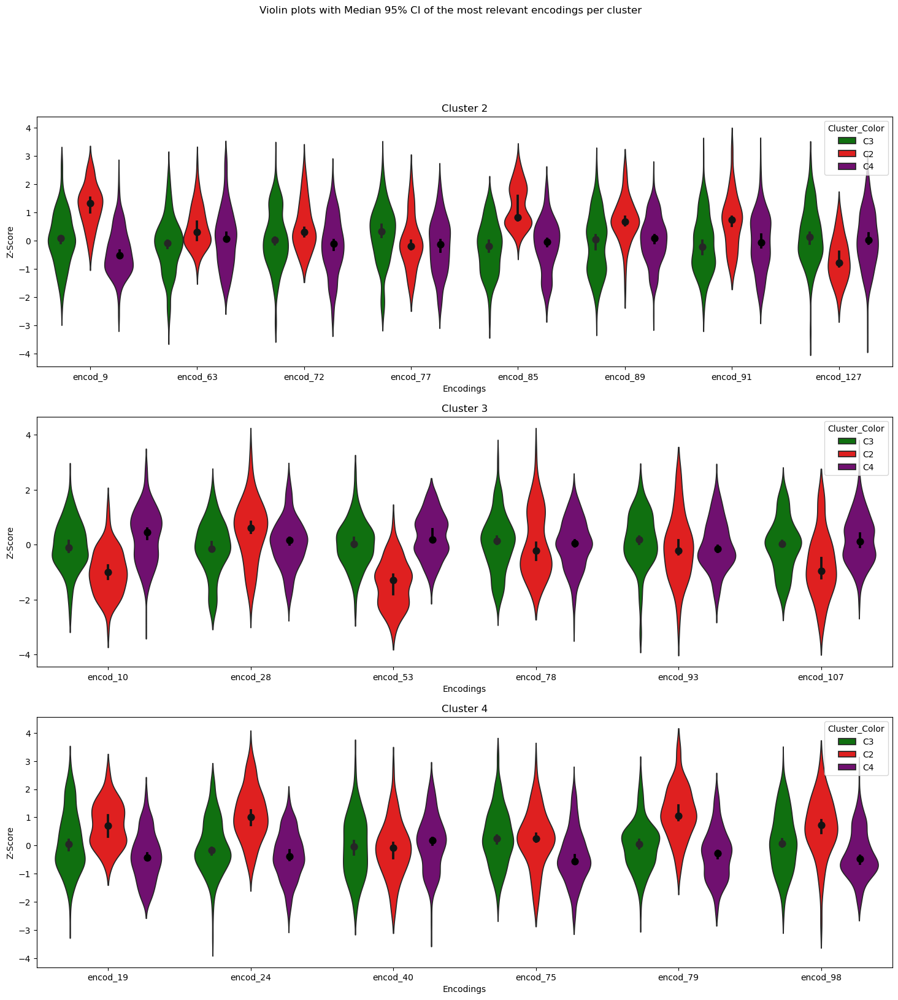
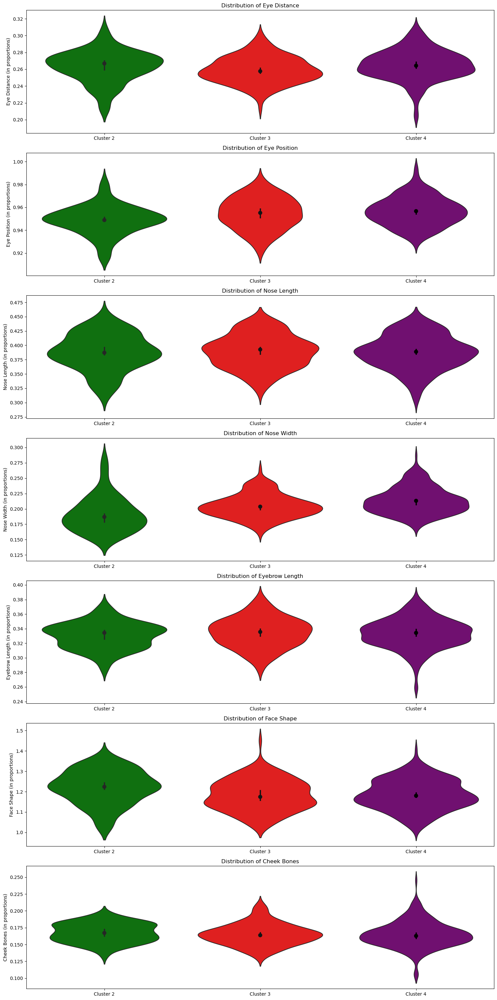
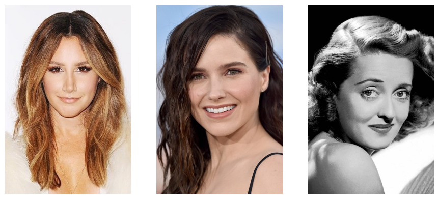
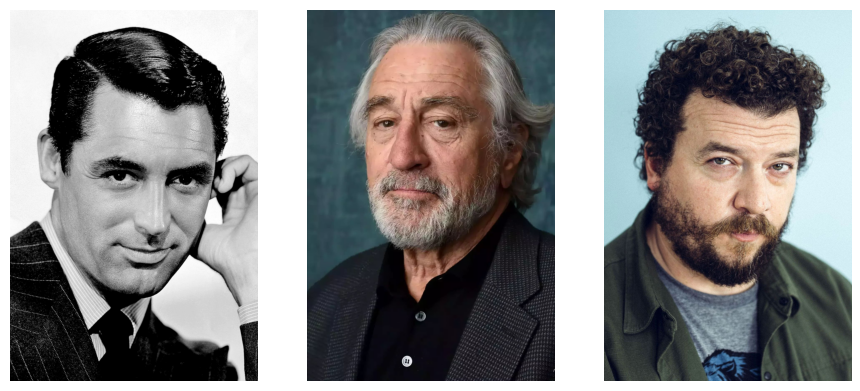
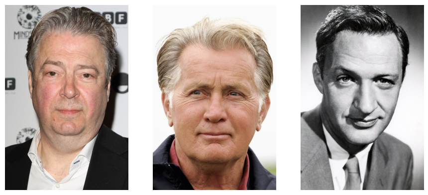

Welcome to the Unsupervised Learning chapter! You chose correctly (don't say that to the Supervised Learning narrator, he gets jealous easily...). Join us as we opt for a more mysterious approach, keeping our data unlabelled and trying to observe patterns, courtesy of the different clustering methods we will use. That means that we can keep pre-defined character tropes on the back-burner for now and, if it all goes swimmingly, we'll find them again at the end of this chapter. Let's dive in!
Clusters, clusters and more... clusters!
As we believe that an actor's face is their most determinant feature, we will only focus on the facial landmarks and encodings to obtain the clusters. We will start off with just the facial encodings. Indeed, we wanted to see whether characters, played by their respective actors, will naturally cluster together based on their encodings. As a quick reminder, the facial encodings are a set of 128 measurements processed by the face recognition algorithm that is unique to each individual. As such, it is a much better metric to diffenriate actors between each other than the facial landmarks.
Now let's get down to the nitty gritty and fun details.
We use the Euclidean distance between encodings as a metric of ressemblance between actors, and in consequence characters. Our default threshold that defines whether two faces ressemble each other is 0.6 in terms of euclidean distance. In other words, if the euclidean distance between actors is around 1, the actors do not ressemble each other.
We chose hierarchical clustering as our method for grouping. This entails cluster maps and dendogram functions from the Seaborn Library.
As such, we built out our cluster map based on Euclidean distance, using the "complete" function to define the distance between two clusters.
That means that the distance between cluster u and the cluster v is defined as the maximum distance between a point in u and a point in v.


We obtain 4 clusters, yay! What does this mean concretely though, you ask? Good question!
We say that a trope is represented by a cluster when at least 50% of characters of that trope are present in said cluster.


Let us analyse which tropes are composed of which cluster:
- Cluster 1 is the smallest and does not contain a majority of any trope.
- Cluster 2 is particularly interesting, differentiating itself from other clusters as we observe only 3 tropes being majoritarily represented.
- Cluster 3 and 4 contain similar tropes and ressemble each other.
So, of the 16 tropes we identified in our pre-processing step, 13 of them cluster together in a specific cluster. Interesteing stuff, right? Let's zoom in and dive into the inter- and intra-cluster analysis.
The cluster C1 is very interesting. It is the cluster with the less intra-cluster variation compared to the complete data variation but it has no trope associated with it. This suggests that characters from this cluster have very similar encodings, facial traits, but that those traits are not representative of any trope. F urther investigations leads to the conclusion that this cluster is composed uniquely of black people and comprises all the black people we have in the dataset. It indicates that we have a bias that separates black people from white people, and that for our algorithm this difference is more important than the difference between tropes. 
However, as Cluster 1 does not represent any of the tropes, we do not include it in further analysis.
Cluster 2 represents more than 80% of the shallow_and_popular trope and more than 50% of the emotional_damage and dumb_and_clumsy tropes.
We observe that this Cluster is mainly represented by women.
It seems like these tropes are primarily played by women.
A quick look at the gender representation by cluster confirms this. It's another clue, we're getting closer!

For cluster 3 and 4, we wanted to see if redoing the clustering on these clusters would allow us to further group tropes but no dice. None of the sub-clusters contained any majority of any of the tropes. As such, we keep the clusters 3 and 4 as they are.
We identify the following tropes (more than 50% of the trope represented in the cluster) for each cluster.
- C3:
charismatic_charmer,laidback_freebird,sidekickandcrazy_jealous_guy - C4:
crazy_fighter,mean_officer,skilled_badass,old_wise_quirky,respected_leaderandevil_character
Each cluster's very own encodings
Now, we analyse the encodings for each cluster of interest, defined henceforth as C2, C3 and C4.
As such, for example if encoding x is very specific to C2 and differ from other clusters, we decide that this particular encoding can be used to describe people belonging to Cluster 2.
Let us find the most relevant encodings per cluster.
To be able to compare all the encodings, we standardized them using Z-score normalization and we choose robust statistics to describe them i.e their median and median absolute deviation (MAD). Indeed, to find the most relevant encodings per cluster, we searched for the ones:
- which varied less compared to their variation across all the data.
- which are far from the other clusters' values.
- which deviate the most compared to the data mean.
To this end, we computed:
- each encoding's MAD ratio, which is equal to: (encoding's MAD intra-cluster)/(encoding's MAD over the complete data)
- each encoding's minimum distance i.e the minimum distance between the median of this encoding for a given cluster and the median of this same encoding for the other clusters
- each encoding's median cluster, plotted against its standardized distribution over the complete data
We can observe this in our scatter plot below.
We can zoom in to better visualise our distribution by filtering our encodings with a MAD ratio smaller than 1.
From the scatter plot, we hand-picked the following most relevant encodings for each cluster using the criteria mentionned above.
- Cluster 2: 77, 85, 63, 127, 89, 9, 81 and 72
- Cluster 3: 28, 93, 107, 10, 78 and 53
- Cluster 4: 75, 24, 79, 98, 19 and 40
To confirm our results, we can visualise the distribution for each most relevant encoding we hnandpicked using a violin plot. 
We observe that most of the encodings have non-overlapping 95% confidence intervals (CI) with the other clusters' 95% CI. This is good news for us as it means that the difference is statistically significative (always a yay when we get to say that). Hence, this gives more confidence in our results and in the fact that some tropes have their own encodings, and surely require such unique encodings to be accepted as individual tropes.
I think we're onto something now... Let's keep digging.
From encodings to facial landmarks
Having found the specific encodings for each cluster, we determine the centroid of each cluster and define it as the general representation of characters associated to that cluster.
Although the encodings are very useful to compare the similarities between actor faces and allows us to cluster the characters together, they still remain quite mysterious.
Indeed, it is hard to understand what these encodings represent physically. Thankfully, we have our landmarks to the rescue!
We will use the proportions obtained by the facial landmarks to "translate" what really defines each cluster.
For example, for Cluster 1, although it may not contain a specific trope, upon further digging, we observe that C1 contains a specific ethnicity: black.
This explains why we observe the nose width, courtesy of our landmarks, of said cluster differs from the other clusters.
So we use 7 different proportions of facial features we plotted in our pre-processing step:
Eye Distance, Eye Position, Nose Length, Eyebrow Length, Face Shape and Cheek Bones.

We notice that Cluster 2 is particularly distinguishable in all facial features compared to C3 and C4. On the other hand, C3 and C4 seem quite similar in terms of distribution of the facial features.
We can finish things off by displaying images of the actors that best represent each cluster of interest i.e. C2, C3 and C4. As such, we are quite literally putting a face to each cluster's own tropes and facial features!
To no one's surprise, we have three images of female actors for our representation of C2. 
From our analysis, they played mostly the shallow_and_popular, emotional_damage and dumb_and_clumsy tropes.
For C3, maybe beards could be a defining feature (note to self: grow a beard)! 
They mainly represented the charismatic_charmer, laidback_freebird, sidekick and crazy_jealous_guy tropes.
And for Cluster 4, we have these three actors images: 
And to finish things off, the actors in C4 represented a wide array of character tropes, mainly playing the crazy_fighter, mean_officer, skilled_badass, old_wise_quirky, respected_leader and evil_character tropes.
In summary, by allowing the data to cluster by itself, we were able to identify three clusters of interest (C2, C3 and C4). Each cluster represented their own tropes and had their own most relevant encodings and landmarks. We're edging closer to an answer to our overarching question, I'm getting goosebumps just thinking about it!
I'll let you hop over to the Supervised Learning chapter now to continue on our data story, we wouldn't want the narrator over there feeling too lonely.
Supervised Learning
You're still here? Wait... no... that means you chose to read my chapter in second?! I can't believe it...
Fine then. See if I care. Go on, go over to the final chapter.